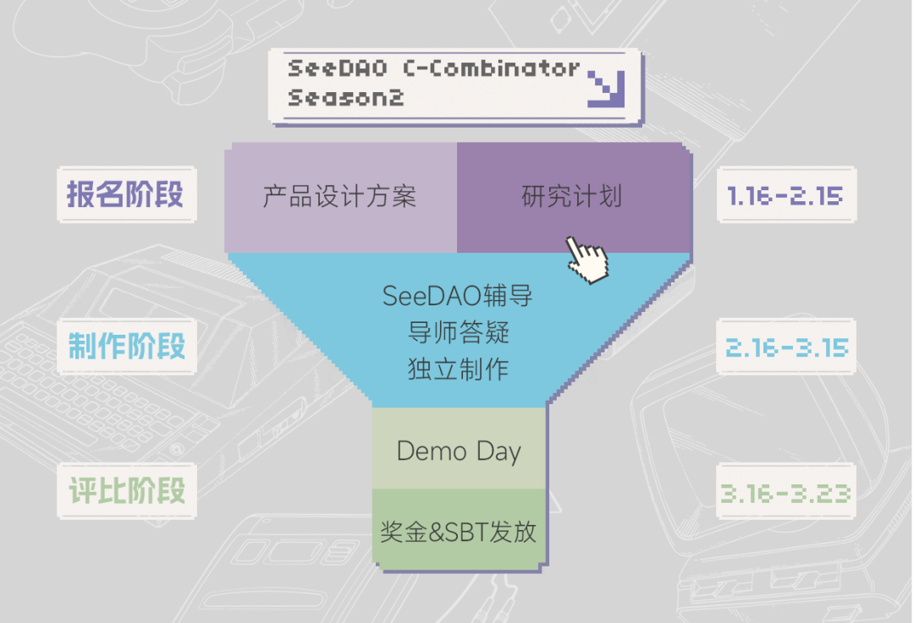
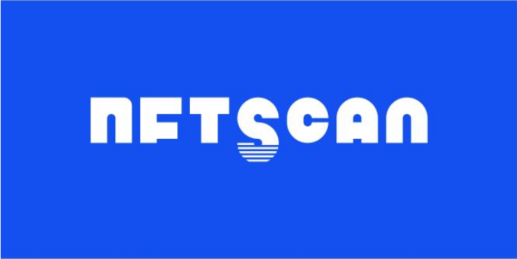

《伊索寓言》曾讲述了这样一个故事。
整个夏天，蚂蚁都在为储备冬天的食物辛勤劳作，而蚱蜢却在悠闲游戏。严寒的冬日终究降临。此时，蚂蚁储备了足够的食物，而蚱蜢却即将死去。
但在伯纳德·舒兹的笔下，这只蚱蜢其实是一位游手好闲但思维缜密的昆虫哲学家。在死亡降临之前，ta为自己的理想与生存方式全力辩护：
「我们现在所看到的所有职业，甚至是所有有组织性的事业，如果继续存在于理想世界，都会是一种游戏。……那里的人只做那些他们评定为有内在价值的事情，就是他们做事情是因为想要做才做，而不是因为他们必须要做。」
——《蚱蜢：游戏、生命与乌托邦》
我们正身处于一个「游戏化」的世界。
研究者迪特丁将「游戏化」（gamification）定义为「将游戏设计要素应用于游戏之外」。作为一种设计方法与思维方式，近年来，「游戏化」被广泛应用于教育、科研、公益乃至日常生活的各个领域，不断探察观与挖掘着游戏价值的边界。
而SeeDAO这一次，便想邀请所有社区成员一起，开启探索SeeDAO游戏化进程。
我们期待一个这样的世界发生：
在「SeeDAO数字城邦2049」的游戏世界中，所有的成员【玩家】都享有DAO【游戏平台】的治理权，既是游戏规则的设定者，也是游戏规则的挑战者。在这个世界里，实现了高度的自动化，AI为代表的自动化工具【NPC】会负责处理大量琐碎而重复性的工作，并提供基础的服务，由此将成员【玩家】从烦杂事务中解放出来，以自觉的精神过上创造性的生活，依据自己的兴趣与特长自由、全面地发展自己。
我们希望，所有社区成员【玩家】都能在SeeDAO数字城邦之中，自由地游戏，并在游戏中获得自由，在DAO中「游戏人生」。
作为SeeDAO推出的战略孵化器，C-Combinator旨在为Web3创造者提供最前沿的教学指导、强大的校友网络与社区支持，成为Web3的创新助产师。
在第一季「孵化活动：寻找 SeeDAO 的种子」中，经过两个月的孵化训练，最后有四个项目脱颖而出，SeeDAO TAO基金为 4 个胜出项目方分别颁发了10000 美金 Grants，其中 DAO Link 获得最佳应用奖，额外获得了10000美金 Bonus。此外，SeeDAO 内部孵化的项目 DeSchool 也已经以1500万美金估值完成了种子轮融资。
我们希望借由C-Combinator「报名-制作-展示」的三个环节，将你的创意（计划书）变成一个最简易的可使用产品/研究报告（Demo），帮助 Web2 的打工人变成 Web3 的创造者
——来共同创造「SeeDAO数字城邦2049」的游戏世界，一个影响现实的在线大型多人游戏。
我们期盼这样的你参与其中：
参赛者：
我们欢迎所有对游戏与游戏化感兴趣的SeeDAO社区成员参与其中！
无论你是开发者——在探索中开创自己在DAO领域的项目，还是研究者——在沉思中讨论DAO与web3的现状与未来，都请直接参加报名工作坊。我们将以业内最前沿的知识背景、最顶级的导师资源、从实践而来的宝贵方法论、饱满的社区力量，以及最重要的——去中心化的方式，来装点你的创意，助力成为游戏的建设者！
投票者：
我们诚挚邀请各位持有 SeeDAO SGN 的成员和专家参与投票之中！为社区的游戏化建言献策，由自己亲手选出心目中理想的「数字城邦」的样子，成为游戏的制定者！
你可以以这样的方式报名参与：
通过 C-Combinator 官网 链接钱包，并点击 投递项目 填写项目具体信息，在本季工作坊主题中选择一个作为项目方向，完成报名。
无论你是开发者——在探索中开创自己在DAO领域的项目，还是研究者——在沉思中讨论DAO与web3的现状与未来，都请直接参加报名工作坊。我们将以业内最前沿的知识背景、最顶级的导师资源、从实践而来的宝贵方法论、饱满的社区力量，以及最重要的——去中心化的方式，来装点你的创意，助力成为游戏的建设者！
下列主题可供你参考：
软件产品类：
- DAO Member Network Visualization
- DAO Member Profile
- DAO 健康度诊断工具
- DAO 公共服务 AIGC Discord Bot
- DAO Member 参与 DAO 的 “即时反馈”
- 翻译公会流程自动化方案
- 透明公开的 DAO 协作工具
- 基于 SBT 的 DAO 任务发放认领管理工具
- DAO 的线上空间与线下空间联动方案
研究类：
- 基于复杂网络理论，研究适用于 DAO Network 的健康衡量指标体系（如节点数量、节点网络集中度和分布程度、网络流动性等等，仅供参考）
- 参考《文明》《三国志》这类游戏中城邦/城市的实力指标设计，研究 SeeDAO 数字城邦的整体数据指标（如 Token 流动性和总市值、节点数量、社区活跃度、文化氛围、线下社区数量、治理效率、产出总量等等）
- 借鉴卡牌游戏，设计 SeeDAO 内个人成长路径、定义个人关键属性（如积分、声望、技能点等）
- DAO 的 IRL 方案
- 目前较有影响力的 DAO 的治理模型对比研究
- DAO 如何避免公地悲剧，如何管理公共资源和提供公共服务
- DAO 与合作社的比较研究
- DAO 与无限游戏、开放游戏的比较研究
- DAO 与古希腊罗马城邦制度的比较研究
- DAO 内工作与数字劳动、产销合一的批判研究
- DAO 与 Network State 叙事
- DAO2DAO 合作模式研究
- 社区流量变现与社区成员、社区金库利益关系
- 为什么很多 DAO 都在做孵化器？
*如果你有其他主题想法，都可在报名前致信 networkpolis@seedao.xyz与我们的工作人员进行沟通。我们欢迎任何新鲜想法的生发与成长。
下面这张表很形象地展现了我们的赛程设置——一个让催生并筛选项目/研究的漏斗。

我们的工作坊一共分为三个阶段，时长两个月（1.16-3.23）。
报名阶段（1.16-2.15）
只需团队内任一成员为 SeeDAO 成员，均可通过 C-Combinator 官网完成报名，并在当周日前邮件通知报名结果。
报名完成后，将由7人专家委员会筛选报名项目，并在当周日前邮件通知报名结果。报名结果也会在 SeeDAO Discord #孵化器公告 频道公示。
制作阶段（2.16-3.15）
这一阶段，成功进入 Workshop 的项目和团队将接受为期 4 周的制作辅导。导师和板块教学，将帮助你拨开Web3创业的迷雾；还会帮你调度 SeeDAO 内社区资源，帮助你在正确的轨道上行驶，做出产品 Demo 或完成研究报告。
你将获得以下支持：
1、4 周专业辅导课程，邀请共7位专家教授7个专题，内容涵盖：以 Gitcoin Grants 申请为例讲社区项目如何获得资助、创作者经济共创模式、DAO 治理与游戏机制设计、如何使用DAO 工具优化社区治理、智能钱包、Web3 新消费模式、SeeDAO 的实践分享等。
2、公开向社区演说，吸引 SeeDAO 其他公会成员加入，建立起你的初始社区。
3、每周 1 小时 Advisor 答疑辅导。
4、强大的校友与导师网络，帮助你融入全球 DAO 协作网络。
5、参加 SeeDAO 当季 Demo Day，获得奖金 Grants 。
6、由 SeeDAO 提供的系统宣发支持，例如媒体报道、活动邀请等。
你需要提供的交付物：
3月16日之前，按照计划书规划，你需要成功制作出交付物——并非为 PPT 或半成品。你需要向 Workshop 的7人专家委员会提交 最终展示物 + 不超过 15 mins 的宣讲视频 ，专家小组将集体评议审核是否可以进入 Demo day。
展示阶段（3.16-3.23）
在这一环节，完成了 MVP 的创造者将来到我们最终的展示舞台 —— Demo Day！
我们将组织社区成员和业内专家检阅营员们的成果并投票。
任何持有 SeeDAO SGN 的成员和邀请专家均可参与投票！一地址可投 6 票；最后按得票前 6 名依次获奖。
各个项目将根据各自排名解锁 C-Combinator 配套 Grants 奖励。Grants 奖励由 SeeDAO 与 伟大航道 共同设立的 TAO 基金提供支持。
我们共设有6个奖项：
第一名为一等奖，3000 U 奖金；
第二和第三名为二等奖，2000 U 奖金；
第四至六名为三等奖，1000 U 奖金。
同时，从这里走出去的项目将有计划进入 SeeDAO 有机生态网络！
漫长而严寒的冬季，寒蝉凄切。
大蚱蜢却竭力深思，对自己的追随者叹道：
「我有个古怪的想法，觉得你们两个都是伪装起来隐藏着的大蚱蜢；实际上，每一个活着的生命都是大蚱蜢。……每一个活着的生命，其实都在玩着精细复杂的游戏，但却同时深信他们自己正是处理日常事务。」
或许，我们每个人都是大蚱蜢。
亦或许，我们每个人都是「游戏之人」（Homo Ludens）。
回望历史，18世纪，我们把人定义成「理性之人」（Homo Sapiens）。其后随着工业革命的迅猛发展，我们又被定义为「制造之人」（Homo Faber）。我们不断被界定，也不断被规范。
而这一次，在游戏成为重要媒介的当下，当游戏再次走入我们稀松平常的现实，我们重新审视自己——作为天生的「游戏之人」。
这一次，我们无需被界定和规范。因为「只有当人是完全意义上的人，他才游戏；只有当人游戏时，他才完全是人」。
或许，我们正在一个人类向虚拟进军的历史节点之上。
SeeDAO 数字城邦文明诞生于游戏之中，而当你承认了游戏，你就承认了精神。
一场新兴的文明在游戏中作为游戏冉冉升起。
由我们着手共创，我们的游戏人生。
C-Combinator 正在主办第二季工作坊，本季主题为：在SeeDAO 游戏人生。此外，本季工作坊由集智俱乐部、独立之光、Rebase、ChainIDE、DAOSpace、Greenpill CN、NFTScan 联合举办。

更多信息，欢迎在 https://seedao.gitbook.io/c-combinator/ 上查看。
文案：豚
海报设计：豚
排版：SuanNai 豚
审核：Baiyu